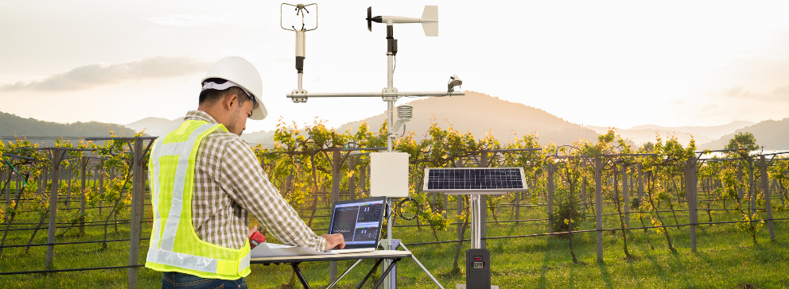

Tecnologia é o conjunto de processos e habilidades usados na produção de bens ou serviços, ou na realização de objetivos, como em investigações científicas. Isso também pode ser embutido em máquinas para permitir a operação destas sem conhecimento detalhado do funcionamento.Definição e uso a tecnologia pode ser mais amplamente definida como as entidades, materiais e imateriais, criadas pela aplicação do esforço mental e físico para obter algum valor. Nesse uso, a tecnologia se refere a ferramentas e máquinas que podem ser usadas para resolver problemas do mundo real.
Todos os dias surge uma novidade em relação ao uso da tecnologia no campo que acabam se tornando indispensáveis. As mais utilizadas atualmente são: biotecnologia, drones, sensores, agricultura de precisão, big data e IoT, automação agrícola e softwares. Além disso, a tecnologia também permitiu que muitos produtores pudessem monitorar de perto a qualidade e a quantidade da produção, reduzir desperdícios e usar recursos de formas mais eficientes.
A tecnologia no campo ocorre quando produtores rurais utilizam softwares, computadores ou sistemas para fazer o monitoramento da lavoura, automatizar os processos, conectar máquinas agrícolas, além de reduzir custos e aumentar a produtividade da cultura por meio de diferentes soluções tecnológicas.
A tecnologia tem transformado diversos setores da sociedade, e a agricultura não é exceção. O setor enfrentou mudanças significativas com sistemas de plantios mais modernos e atividades agrícolas que utilizam a tecnologia como aliada. Conforme a tecnologia no agronegócio avança, o progresso em produtividade e a gestão agrícola precisam se manter atualizados. Isso significa utilizar implementações de tecnologia para inovar o setor e otimizar as operações. Consequentemente, ao fazer uso da tecnologia na agricultura, é possível ter vários benefícios. Confira alguns deles: redução de custos: com alguns mecanismos, é possível reduzir o consumo de fertilizantes, água e defensivos; aumento da produtividade: com as ferramentas tecnológicas, é possível corrigir mais rapidamente os problemas e agilizar os processos; redução dos impactos ambientais: com uma agricultura mais sustentável, você consegue escoar menos produtos químicos em rios e contribuir com a saúde da natureza e de todas as pessoas; aumento da segurança: a tecnologia proporciona mais segurança na realização dos processos e reduz as falhas; mais eficiência: com a tecnologia na agricultura, os colaboradores podem atuar de maneira mais eficiente e ágil, o que melhora os resultados em todos os sentidos; maior assertividade nos processos: é possível identificar e corrigir falhas com rapidez, como a falta de nutrientes no solo ou doenças na plantação; monitorar as condições climáticas, o solo, as pragas e as doenças que podem afetar as plantações: com o uso de sensores, drones, satélites e aplicativos, os agricultores podem coletar e analisar dados em tempo real; análise de clima: a previsão de mudanças climáticas se torna possível por meio de uma mapa detalhado com as informações, o que evita perdas no campo; melhoria da gestão da propriedade rural: com o uso de softwares específicos, os produtores podem controlar custos, receitas, estoques, contratos, certificações e impostos de forma integrada e automatizada.